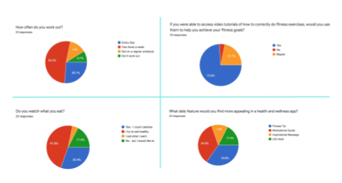
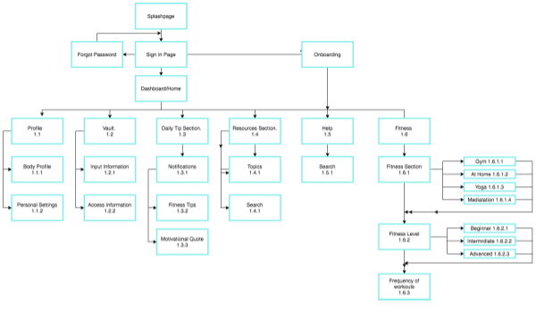
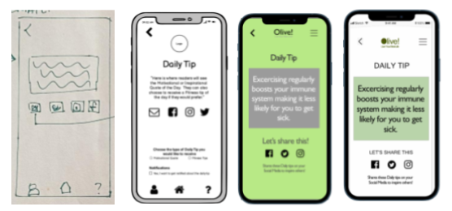
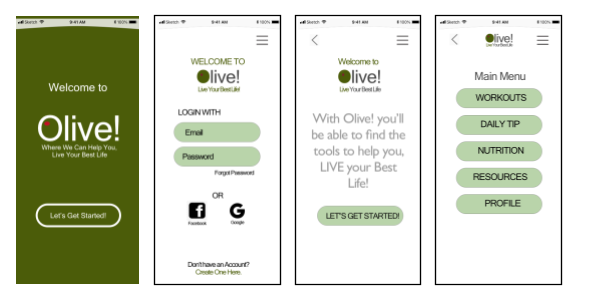
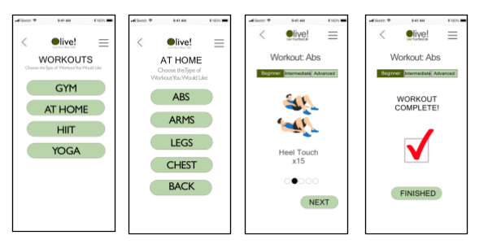
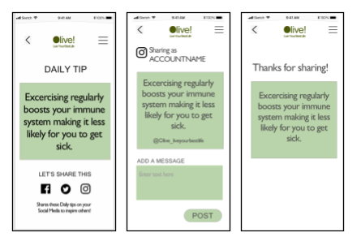
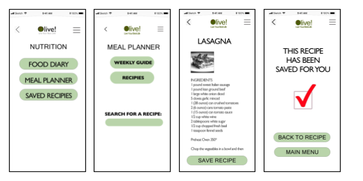
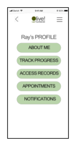

Olive! Is a Health and Fitness app that I researched and designed for my course at CareerFoundry.. It was my first UX designing experience and a great learning tool for me. From the competitive analysis, to interviews and creating user personas and then diving into the creation of wireframes and finally a clickable prototype, with many revisions along the way. Below are the steps I took to create the app, come along and read about my journey to create this app.
Understanding the Problem
When designing an app, you're trying to solve a problem or issue that users have. So you create a measurable Problem Statement.
Everyone needs a way to be able to quickly and securely have access to their own personal medical records and also be able to find health and wellness resources that will benefit them. We will know this to be true when we see that Olive is trusted as a source for health and wellness resources for individuals and users who are using the app on a frequent basis as a source for their health and wellness needs.
Researching
This is one of the most important parts to discovering what to include in the app. I began by doing some competitive analysis on other apps that were fairly similar to the premise of Olive! After doing a deep dive in these other apps, I conducted a SWOT analysis and based on this, I determined key and unique features I could provide that would make Olive! Unique from other apps.

Surveys, Interviews and User Flows
Next I conducted some interviews and also a survey to get a better perspective of my ideas and how users felt. I took their input and created user personas, examples of my target audience. I made user stories to see how they would use all the different features of the app and in the end, I had a pretty clear picture of my app in my head and then it was time to put the ideas on paper. I began to take the user stories and create user flows, the path they would take through the app when trying out the different features and sections of the app.

Mockups and Wireframes
With all this information, I was able to create my site map. With this as my plan, I could then mock up the different pages for the app. Once I was happy with the layout, then came low fidelity, mid and then high fidelity wireframes. Along the way I had users give me feedback through A/B testing on flow and also layouts.

Final Prototype
In the end I had a group of high fidelity pages that I made into a clickable prototype. Here I finally use the user stores I had created and actually see how people would use the app. This was a great accomplishment for me, I had a final product that I had created from scratch. Below you’ll find the link to my prototype. With that being said, I realize that even though you think something works well, there is always room for improvement. I can see when designers look at app reviews and comments from actual users as they can use this user feedback to then improve an app. And this is why there are always versions of the app. So this is my version 1 of the Olive! app.

Here you can follow the screenshots of the major sections of the app.

From the main menu you can access the Workout section and then various places you can work out and specific areas - and then it takes you through the workout itself.

Next is the Daily Tip section, where you can even share Daily Tips to your social media sites.

In the Nutrition section you can track your nutrition progress, plan meals and find recipes.

There is a Resource section and also your Profile. In the Profile you can access and upload your medical information and appointments
I chose the color tones as they are warm and inviting colors and give a bit of a retro 1970’s feel. The typography uses the font style Roboto. It is a clean, modern and easy to read font that is universal.